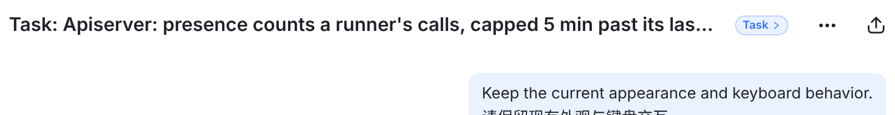
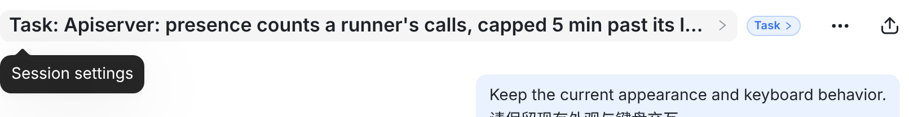
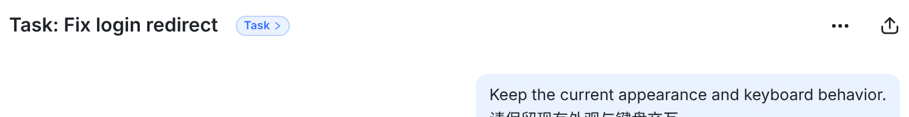
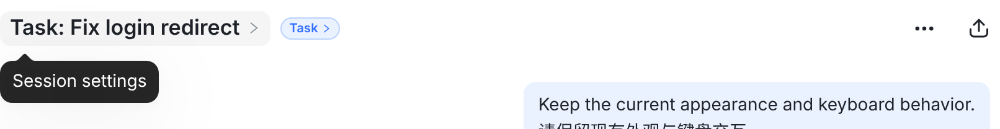

今天
改后（推荐）
长标题 · 不悬停


长标题 · 悬停

1
2

短标题 · 不悬停

3

短标题 · 悬停

3

owner 11-27：悬停和非悬停状态没对齐；悬停不需要显示提示和其它悬停效果。下面是真页面截图（今天 main 的构建，1440 宽窗口），「改后」是同一构建去掉标题的悬停效果后拍的。标题照样一按打开会话设置，只是悬停时不再变样。




1今天悬停时，标题铺一层灰底、末尾冒出 ›，长标题因此少显示一截（「its las…」变「its l…」）。2同时弹出「Session settings」提示。3短标题时 › 占地方，把「Task ›」往右推了 17px——就是你截图里的没对齐。改后四种情况都和不悬停时一模一样：不铺底、不出 ›、不弹提示，徽标不动。
| 悬停 | 标题按钮悬停时不变样：去掉灰底、去掉 ›、去掉「Session settings」提示（Tooltip 外层拿掉）。光标仍是手形，表示能按。 |
| 按下 | 不变：按标题打开/收起会话设置（和任务栏一次只开一栏也不变）。设置开着时标题也不变样（11-25 已定）。 |
| 键盘 | Tab 到标题时，今天是借悬停那层灰底和 › 表示焦点。改后用全站统一的焦点描边（:focus-visible 时一圈描边，鼠标点不出现），见待定 ②。 |
| 读屏 | 按钮的名字仍是「Session settings」（aria-label），只是不再弹视觉提示。 |
| 手机 | 手机会话页顶栏不显示标题（10-15），不涉及。 |
落地：一个 web 改动——index.css 去掉 .workspace-name-button 的悬停底色和 › 规则、WorkspaceView 去掉标题外层的 Tooltip、加 aria-label；测试改成「悬停不出提示」。
待你定：① 去掉标题的悬停底色、› 和提示（推荐，即你说的）；② 键盘 Tab 到标题时用全站统一的焦点描边（推荐）/ 也什么都不显示；③ 光标保持手形（推荐）/ 改成普通箭头。